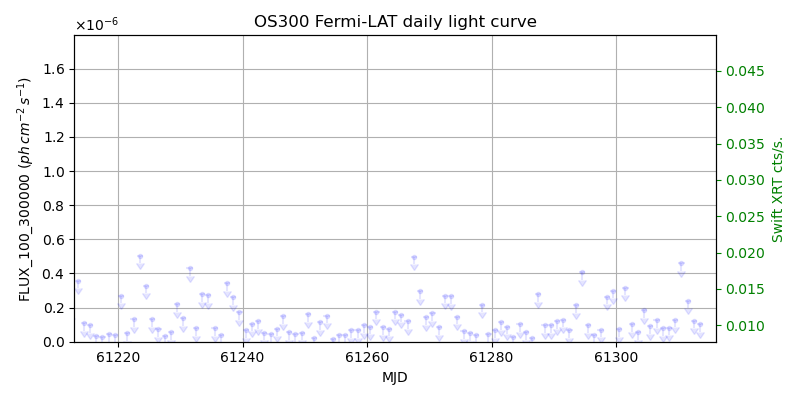
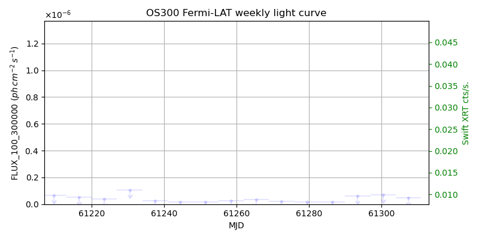
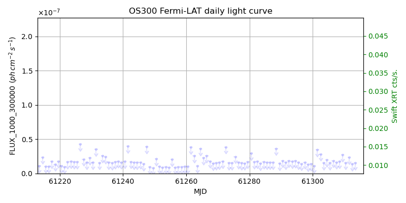

LAT Lightcurve site: https://fermi.gsfc.nasa.gov/ssc/data/access/lat/msl_lc/source/OS_300
Swift site: https://www.swift.psu.edu/monitoring/source.php?source=OS300
NED: Query
Time of last update of this page: UT: 2026-10-01 15:42 (MJD: 61314.654)
| Property | Value |
|---|---|
| R.A. | 16:02:07.20 |
| Dec. | 33:26:52.8 |
| z | 1.100 |
| 3FGL SpectrumType | |
| 3FGL PL Index | -1.00 |
| 3FGL Flux_100_300000 | -1.00e+00 |
| 3FGL Flux_1000_300000 | -1.00e+00 |
| 3FGL Flux >200 GeV | -1.00e+00 |
| 3FGL Extrap. Crab >200 GeV | -1.00 |
| 3FGL Flux After EBL Absorption >200GeV | -1.00e+00 |
| 3FGL EBL Crab Fraction >200GeV | -1.00 |

| MJD | dMJD | Flux | dFlux | Frac3FGL | FracCrab>200GeV | EBLFracCrab>200GeV |
|---|---|---|---|---|---|---|
| 61309.50 | 0.50 | 1.29e-07 | 0.00e+00 | 0.00 | 0.00 | -0.00 |
| 61310.50 | 0.50 | 4.59e-07 | 0.00e+00 | 0.00 | 0.00 | -0.00 |
| 61311.50 | 0.50 | 2.40e-07 | 0.00e+00 | 0.00 | 0.00 | -0.00 |
| 61312.50 | 0.50 | 1.24e-07 | 0.00e+00 | 0.00 | 0.00 | -0.00 |
| 61313.50 | 0.50 | 1.03e-07 | 0.00e+00 | 0.00 | 0.00 | -0.00 |

| MJD | dMJD | Flux | dFlux | Frac3FGL | FracCrab>200GeV | EBLFracCrab>200GeV |
|---|---|---|---|---|---|---|
| 61279.50 | 3.50 | 1.44e-08 | 0.00e+00 | 0.00 | 0.00 | -0.00 |
| 61286.50 | 3.50 | 1.46e-08 | 0.00e+00 | 0.00 | 0.00 | -0.00 |
| 61293.50 | 3.50 | 5.98e-08 | 0.00e+00 | 0.00 | 0.00 | -0.00 |
| 61300.50 | 3.50 | 6.81e-08 | 0.00e+00 | 0.00 | 0.00 | -0.00 |
| 61307.50 | 3.50 | 4.67e-08 | 0.00e+00 | 0.00 | 0.00 | -0.00 |

| MJD | dMJD | Flux | dFlux | Frac3FGL | FracCrab>200GeV | EBLFracCrab>200GeV |
|---|---|---|---|---|---|---|
| 61309.50 | 0.50 | 2.70e-08 | 0.00e+00 | 0.00 | 0.00 | -0.00 |
| 61310.50 | 0.50 | 1.55e-08 | 0.00e+00 | 0.00 | 0.00 | -0.00 |
| 61311.50 | 0.50 | 2.33e-08 | 0.00e+00 | 0.00 | 0.00 | -0.00 |
| 61312.50 | 0.50 | 1.36e-08 | 0.00e+00 | 0.00 | 0.00 | -0.00 |
| 61313.50 | 0.50 | 1.51e-08 | 0.00e+00 | 0.00 | 0.00 | -0.00 |
| MJD | dMJD | Flux | dFlux | Frac3FGL | FracCrab>200GeV | EBLFracCrab>200GeV |
|---|---|---|---|---|---|---|
| 61279.50 | 3.50 | 2.59e-09 | 0.00e+00 | 0.00 | 0.00 | -0.00 |
| 61286.50 | 3.50 | 4.23e-09 | 0.00e+00 | 0.00 | 0.00 | -0.00 |
| 61293.50 | 3.50 | 2.35e-09 | 0.00e+00 | 0.00 | 0.00 | -0.00 |
| 61300.50 | 3.50 | 4.14e-09 | 0.00e+00 | 0.00 | 0.00 | -0.00 |
| 61307.50 | 3.50 | 2.74e-09 | 0.00e+00 | 0.00 | 0.00 | -0.00 |
--------------------------------------------------------- Using user-supplied coords: 16:02:07.20 33:26:52.8 2000 --------------------------------------------------------- FLWO UT night of: 2026-10-02 Local Sid. @ Midnight: 00:20 Sunset (-15.0) (local, UT): 19:15 02:15 Sunrise (-15.0) (local, UT): 05:12 12:12 Moonrise (local, UT): 21:44 04:44 Moonset (local, UT): Moon phase: 0.64 --------------------------------------------------------- AzTime LSID UT Obj_el Obj_az Mn_el Mn_az Sep. --------------------------------------------------------- 19:15 19:34 02:15 45.9 287.0 -22.5 33.5 117.2 19:45 20:04 02:45 39.8 289.1 -18.9 39.0 117.0 20:15 20:34 03:15 33.8 291.4 -14.8 44.1 116.9 20:45 21:04 03:45 27.9 293.9 -10.4 48.7 116.7 21:15 21:34 04:15 22.1 296.6 -5.4 53.0 116.6 21:45 22:05 04:45 16.5 299.5 -0.1 56.9 116.4 22:15 22:35 05:15 11.0 302.6 4.8 60.5 116.2 22:45 23:05 05:45 5.8 306.0 10.1 63.8 116.1 23:15 23:35 06:15 1.0 309.8 15.7 67.0 115.9 23:45 00:05 06:45 -2.7 313.9 21.4 69.9 115.8 00:15 00:35 07:15 -8.6 318.3 27.2 72.8 115.6 00:45 01:05 07:45 -12.6 323.2 33.1 75.6 115.5 01:15 01:35 08:15 -16.2 328.5 39.1 78.3 115.4 01:45 02:05 08:45 -19.3 334.3 45.2 81.1 115.2 02:15 02:35 09:15 -21.8 340.4 51.4 83.9 115.1 02:45 03:05 09:45 -23.6 347.0 57.5 87.0 115.0 03:15 03:35 10:15 -24.6 353.7 63.7 90.5 114.9 03:45 04:05 10:45 -24.9 0.7 69.9 95.0 114.8 04:15 04:36 11:15 -24.5 7.6 76.1 101.7 114.7 04:45 05:06 11:45 -23.3 14.3 82.0 115.9 114.6 05:12 05:32 12:12 -21.6 20.0 86.0 158.5 114.6 --------------------------------------------------------- Dark hours >55 deg.: 0.00